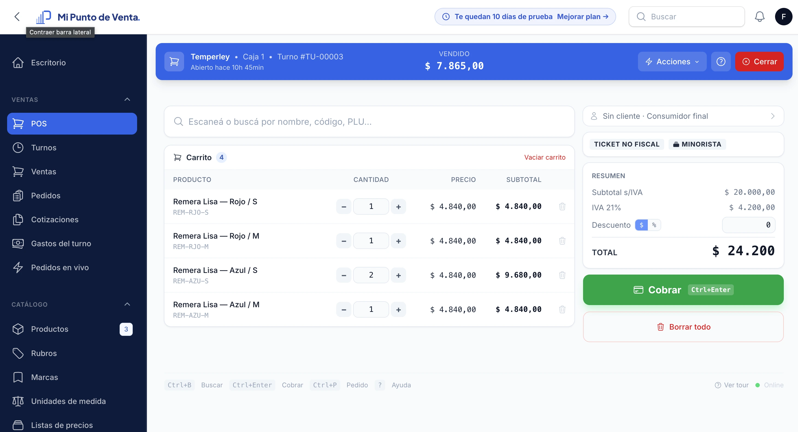
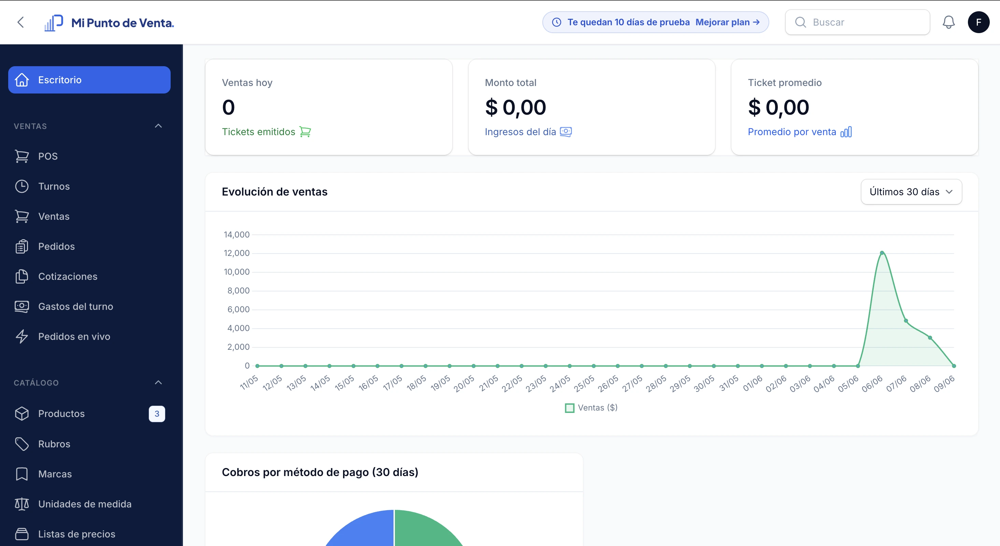
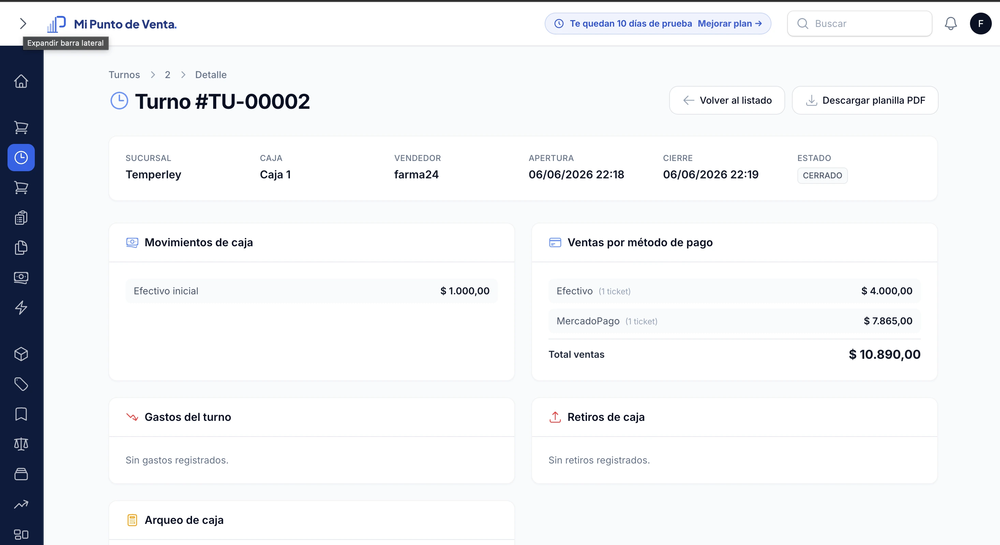
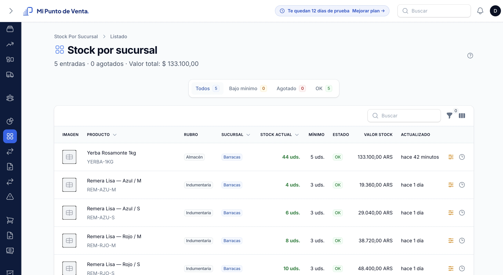

Mostramos el camino real: 7 pasos cortos desde que entrás a aldia.com.ar hasta que cerrás tu primera caja. Sin curso, sin instalador, sin servidor.
Entrás a aldia.com.ar/registro, ponés el nombre del negocio, tu email y elegís el subdominio (ej: tunegocio.aldia.com.ar). Sin tarjeta, sin más datos.
Un wizard te pide los datos básicos: razón social, CUIT (si corresponde), domicilio fiscal y categoría AFIP. Cargás el logo y listo. Esto sale impreso en tickets y facturas.
Creás la primera sucursal con nombre y dirección. Después al menos una caja (puede llamarse "Caja 1" o "Mostrador"). Si tenés más sucursales o cajas las podés sumar después sin límite.
Tres opciones: cargás uno por uno desde el ABM, importás un Excel masivo (te damos la plantilla), o usás la IA del sistema para sacar foto al producto y completar nombre+descripción+precio sugerido en segundos.
Entrás al POS, elegís tu caja, ingresás el efectivo inicial (lo que tenés en el cajón) y listo. El turno queda abierto y todas las ventas que cargues van asociadas a él hasta que lo cierres.
Buscás el producto por nombre, código de barras o PLU. Lo agregás al carrito. Si es por peso, ponés los kilos. Apretás Cobrar, dividís el total entre los métodos de pago, confirmás. Ticket impreso o pantalla.
Cuando terminás el día, cerrás el turno con el efectivo final. El sistema te muestra el arqueo, todas las ventas, los gastos y te genera una planilla PDF descargable. Listo: tu día completo trazado.
El sistema corre 100% en el navegador. Vendés en la PC del mostrador y consultás reportes desde el celular.
Una venta real y las pantallas que vas a usar todos los días. Sin maquetas.




14 días gratis. Sin tarjeta de crédito. Tu cuenta está lista en menos de 5 minutos.
Crear cuenta gratis ahora